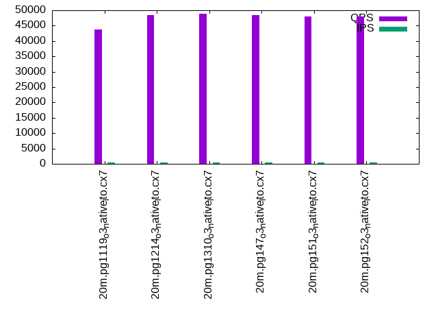

Introduction
This is a report for the insert benchmark with 20M docs and 4 client(s). It is generated by scripts (bash, awk, sed) and Tufte might not be impressed. An overview of the insert benchmark is here and a short update is here. Below, by DBMS, I mean DBMS+version.config. An example is my8020.c10b40 where my means MySQL, 8020 is version 8.0.20 and c10b40 is the name for the configuration file.
The test server has 8 AMD cores, 16G RAM and an NVMe SSD. It is described here as the Beelink. The benchmark was run with 4 clients and there were 1 or 2 connections per client (1 for queries, 1 for inserts). It uses 4 tables, 1 per client. It loads 20M rows without secondary indexes, creates secondary indexes, loads another 20M rows then does 3 read+write tests for one hour each that do queries as fast as possible with 100, 500 and then 1000 writes/second/client concurrent with the queries. The database is cached by the storage engine and the only IO is for writes. Clients and the DBMS share one server. The per-database configs are in the per-database subdirectories here.
The tested DBMS are:
- pg1119_o3_native_lto.cx7 - Postgres 11.19, the cx7 config and the build used: -O3 -march=native -mtune=native
- pg1214_o3_native_lto.cx7 - Postgres 12.14, the cx7 config and the build used: -O3 -march=native -mtune=native
- pg1310_o3_native_lto.cx7 - Postgres 13.10, the cx7 config and the build used: -O3 -march=native -mtune=native
- pg147_o3_native_lto.cx7 - Postgres 14.7, the cx7 config and the build used: -O3 -march=native -mtune=native
- pg151_o3_native_lto.cx7 - Postgres 15.1, the cx7 config and the build used: -O3 -march=native -mtune=native
- pg152_o3_native_lto.cx7 - Postgres 15.2, the cx7 config and the build used: -O3 -march=native -mtune=native
- pg16prebeta - Postgres 16 from the main branch at git sha 1ab763fc2, the cx7 config and the build used: -O3 -march=native -mtune=native
Contents
- Summary
- l.i0: load without secondary indexes
- l.x: create secondary indexes
- l.i1: continue load after secondary indexes created
- q100.1: range queries with 100 insert/s per client
- q500.1: range queries with 500 insert/s per client
- q1000.1: range queries with 1000 insert/s per client
Summary
The numbers are inserts/s for l.i0 and l.i1, indexed docs (or rows) /s for l.x and queries/s for q*.2. The values are the average rate over the entire test for inserts (IPS) and queries (QPS). The range of values for IPS and QPS is split into 3 parts: bottom 25%, middle 50%, top 25%. Values in the bottom 25% have a red background, values in the top 25% have a green background and values in the middle have no color. A gray background is used for values that can be ignored because the DBMS did not sustain the target insert rate. Red backgrounds are not used when the minimum value is within 80% of the max value.
| dbms | l.i0 | l.x | l.i1 | q100.1 | q500.1 | q1000.1 |
|---|---|---|---|---|---|---|
| 20m.pg1119_o3_native_lto.cx7 | 263158 | 837500 | 117647 | 43786 | 42860 | 42161 |
| 20m.pg1214_o3_native_lto.cx7 | 256410 | 804000 | 116959 | 48486 | 47656 | 46773 |
| 20m.pg1310_o3_native_lto.cx7 | 270270 | 804000 | 119760 | 48826 | 47845 | 47054 |
| 20m.pg147_o3_native_lto.cx7 | 256410 | 804000 | 118343 | 48511 | 47323 | 46619 |
| 20m.pg151_o3_native_lto.cx7 | 266667 | 873913 | 119048 | 48015 | 47362 | 46328 |
| 20m.pg152_o3_native_lto.cx7 | 259740 | 913636 | 119760 | 48005 | 46734 | 46187 |
This table has relative throughput, throughput for the DBMS relative to the DBMS in the first line, using the absolute throughput from the previous table.
| dbms | l.i0 | l.x | l.i1 | q100.1 | q500.1 | q1000.1 |
|---|---|---|---|---|---|---|
| 20m.pg1119_o3_native_lto.cx7 | 1.00 | 1.00 | 1.00 | 1.00 | 1.00 | 1.00 |
| 20m.pg1214_o3_native_lto.cx7 | 0.97 | 0.96 | 0.99 | 1.11 | 1.11 | 1.11 |
| 20m.pg1310_o3_native_lto.cx7 | 1.03 | 0.96 | 1.02 | 1.12 | 1.12 | 1.12 |
| 20m.pg147_o3_native_lto.cx7 | 0.97 | 0.96 | 1.01 | 1.11 | 1.10 | 1.11 |
| 20m.pg151_o3_native_lto.cx7 | 1.01 | 1.04 | 1.01 | 1.10 | 1.11 | 1.10 |
| 20m.pg152_o3_native_lto.cx7 | 0.99 | 1.09 | 1.02 | 1.10 | 1.09 | 1.10 |
This lists the average rate of inserts/s for the tests that do inserts concurrent with queries. For such tests the query rate is listed in the table above. The read+write tests are setup so that the insert rate should match the target rate every second. Cells that are not at least 95% of the target have a red background to indicate a failure to satisfy the target.
| dbms | q100.1 | q500.1 | q1000.1 |
|---|---|---|---|
| pg1119_o3_native_lto.cx7 | 399 | 1993 | 3989 |
| pg1214_o3_native_lto.cx7 | 399 | 1994 | 3989 |
| pg1310_o3_native_lto.cx7 | 399 | 1994 | 3989 |
| pg147_o3_native_lto.cx7 | 399 | 1994 | 3989 |
| pg151_o3_native_lto.cx7 | 399 | 1994 | 3989 |
| pg152_o3_native_lto.cx7 | 399 | 1993 | 3989 |
| target | 400 | 2000 | 4000 |
l.i0
l.i0: load without secondary indexes. Graphs for performance per 1-second interval are here.
Average throughput:
Insert response time histogram: each cell has the percentage of responses that take <= the time in the header and max is the max response time in seconds. For the max column values in the top 25% of the range have a red background and in the bottom 25% of the range have a green background. The red background is not used when the min value is within 80% of the max value.
| dbms | 256us | 1ms | 4ms | 16ms | 64ms | 256ms | 1s | 4s | 16s | gt | max |
|---|---|---|---|---|---|---|---|---|---|---|---|
| pg1119_o3_native_lto.cx7 | 99.975 | 0.026 | 0.012 | ||||||||
| pg1214_o3_native_lto.cx7 | 99.976 | 0.024 | 0.012 | ||||||||
| pg1310_o3_native_lto.cx7 | 0.003 | 99.972 | 0.026 | 0.013 | |||||||
| pg147_o3_native_lto.cx7 | 99.983 | 0.017 | 0.010 | ||||||||
| pg151_o3_native_lto.cx7 | 99.968 | 0.032 | 0.011 | ||||||||
| pg152_o3_native_lto.cx7 | 99.953 | 0.047 | 0.011 |
Performance metrics for the DBMS listed above. Some are normalized by throughput, others are not. Legend for results is here.
ips qps rps rmbps wps wmbps rpq rkbpq wpi wkbpi csps cpups cspq cpupq dbgb1 dbgb2 rss maxop p50 p99 tag 263158 0 0 0.0 309.2 113.7 0.000 0.000 0.001 0.443 25920 71.3 0.098 22 1.9 5.2 0.0 0.012 78615 36196 20m.pg1119_o3_native_lto.cx7 256410 0 0 0.0 285.3 102.8 0.000 0.000 0.001 0.411 25778 70.8 0.101 22 1.9 5.2 0.0 0.012 75418 28769 20m.pg1214_o3_native_lto.cx7 270270 0 0 0.0 304.4 109.6 0.000 0.000 0.001 0.415 26468 71.0 0.098 21 1.9 5.2 0.0 0.013 80912 8890 20m.pg1310_o3_native_lto.cx7 256410 0 0 0.0 303.9 112.3 0.000 0.000 0.001 0.448 25691 70.7 0.100 22 1.9 5.2 0.0 0.010 76915 17287 20m.pg147_o3_native_lto.cx7 266667 0 0 0.0 293.2 105.7 0.000 0.000 0.001 0.406 26154 68.8 0.098 21 1.9 5.2 0.0 0.011 79838 22176 20m.pg151_o3_native_lto.cx7 259740 0 0 0.0 293.3 105.6 0.000 0.000 0.001 0.416 25958 69.0 0.100 21 1.9 5.2 0.0 0.011 79343 300 20m.pg152_o3_native_lto.cx7
l.x
l.x: create secondary indexes.
Average throughput:
Performance metrics for the DBMS listed above. Some are normalized by throughput, others are not. Legend for results is here.
ips qps rps rmbps wps wmbps rpq rkbpq wpi wkbpi csps cpups cspq cpupq dbgb1 dbgb2 rss maxop p50 p99 tag 837500 0 0 0.0 353.8 161.7 0.000 0.000 0.000 0.198 1730 44.4 0.002 4 3.7 8.6 0.0 0.003 NA NA 20m.pg1119_o3_native_lto.cx7 804000 0 0 0.0 349.1 159.7 0.000 0.000 0.000 0.203 1512 41.6 0.002 4 3.7 8.6 0.0 0.003 NA NA 20m.pg1214_o3_native_lto.cx7 804000 0 0 0.0 376.3 171.4 0.000 0.000 0.000 0.218 1334 41.2 0.002 4 3.7 8.6 0.0 0.003 NA NA 20m.pg1310_o3_native_lto.cx7 804000 0 0 0.0 448.3 206.3 0.000 0.000 0.001 0.263 1962 38.5 0.002 4 3.7 8.6 0.0 0.003 NA NA 20m.pg147_o3_native_lto.cx7 873913 0 0 0.0 399.4 185.2 0.000 0.000 0.000 0.217 1265 39.4 0.001 4 3.7 8.6 0.0 0.004 NA NA 20m.pg151_o3_native_lto.cx7 913636 0 0 0.0 402.2 186.0 0.000 0.000 0.000 0.208 1747 38.0 0.002 3 3.7 8.6 0.0 0.004 NA NA 20m.pg152_o3_native_lto.cx7
l.i1
l.i1: continue load after secondary indexes created. Graphs for performance per 1-second interval are here.
Average throughput:
Insert response time histogram: each cell has the percentage of responses that take <= the time in the header and max is the max response time in seconds. For the max column values in the top 25% of the range have a red background and in the bottom 25% of the range have a green background. The red background is not used when the min value is within 80% of the max value.
| dbms | 256us | 1ms | 4ms | 16ms | 64ms | 256ms | 1s | 4s | 16s | gt | max |
|---|---|---|---|---|---|---|---|---|---|---|---|
| pg1119_o3_native_lto.cx7 | 99.981 | 0.017 | 0.001 | 0.051 | |||||||
| pg1214_o3_native_lto.cx7 | 99.987 | 0.013 | 0.013 | ||||||||
| pg1310_o3_native_lto.cx7 | 99.988 | 0.012 | 0.014 | ||||||||
| pg147_o3_native_lto.cx7 | 99.984 | 0.016 | 0.014 | ||||||||
| pg151_o3_native_lto.cx7 | 99.987 | 0.012 | 0.001 | 0.051 | |||||||
| pg152_o3_native_lto.cx7 | 99.988 | 0.012 | 0.013 |
Performance metrics for the DBMS listed above. Some are normalized by throughput, others are not. Legend for results is here.
ips qps rps rmbps wps wmbps rpq rkbpq wpi wkbpi csps cpups cspq cpupq dbgb1 dbgb2 rss maxop p50 p99 tag 117647 0 0 0.0 354.7 122.4 0.000 0.000 0.003 1.066 23450 65.2 0.199 44 7.7 20.9 0.0 0.051 30517 21384 20m.pg1119_o3_native_lto.cx7 116959 0 0 0.0 352.0 121.0 0.000 0.000 0.003 1.059 23663 64.8 0.202 44 7.6 20.6 0.0 0.013 30767 21177 20m.pg1214_o3_native_lto.cx7 119760 0 0 0.0 361.9 124.5 0.000 0.000 0.003 1.065 24036 65.6 0.201 44 7.6 20.7 0.0 0.014 31416 21277 20m.pg1310_o3_native_lto.cx7 118343 0 0 0.0 357.6 123.6 0.000 0.000 0.003 1.070 23727 66.5 0.200 45 7.6 20.8 0.0 0.014 30866 21077 20m.pg147_o3_native_lto.cx7 119048 0 0 0.0 358.8 124.1 0.000 0.000 0.003 1.067 24075 66.2 0.202 44 7.6 20.7 0.0 0.051 31266 20827 20m.pg151_o3_native_lto.cx7 119760 0 0 0.0 362.2 124.3 0.000 0.000 0.003 1.063 23927 66.2 0.200 44 7.6 20.7 0.0 0.013 31227 21226 20m.pg152_o3_native_lto.cx7
q100.1
q100.1: range queries with 100 insert/s per client. Graphs for performance per 1-second interval are here.
Average throughput:
Query response time histogram: each cell has the percentage of responses that take <= the time in the header and max is the max response time in seconds. For max values in the top 25% of the range have a red background and in the bottom 25% of the range have a green background. The red background is not used when the min value is within 80% of the max value.
| dbms | 256us | 1ms | 4ms | 16ms | 64ms | 256ms | 1s | 4s | 16s | gt | max |
|---|---|---|---|---|---|---|---|---|---|---|---|
| pg1119_o3_native_lto.cx7 | 99.984 | 0.010 | 0.006 | nonzero | 0.010 | ||||||
| pg1214_o3_native_lto.cx7 | 99.986 | 0.008 | 0.005 | nonzero | 0.011 | ||||||
| pg1310_o3_native_lto.cx7 | 99.986 | 0.008 | 0.005 | nonzero | nonzero | 0.017 | |||||
| pg147_o3_native_lto.cx7 | 99.985 | 0.009 | 0.006 | nonzero | 0.010 | ||||||
| pg151_o3_native_lto.cx7 | 99.986 | 0.009 | 0.005 | nonzero | 0.010 | ||||||
| pg152_o3_native_lto.cx7 | 99.985 | 0.010 | 0.005 | nonzero | 0.010 |
Insert response time histogram: each cell has the percentage of responses that take <= the time in the header and max is the max response time in seconds. For max values in the top 25% of the range have a red background and in the bottom 25% of the range have a green background. The red background is not used when the min value is within 80% of the max value.
| dbms | 256us | 1ms | 4ms | 16ms | 64ms | 256ms | 1s | 4s | 16s | gt | max |
|---|---|---|---|---|---|---|---|---|---|---|---|
| pg1119_o3_native_lto.cx7 | 99.764 | 0.236 | 0.014 | ||||||||
| pg1214_o3_native_lto.cx7 | 99.681 | 0.319 | 0.014 | ||||||||
| pg1310_o3_native_lto.cx7 | 99.833 | 0.167 | 0.014 | ||||||||
| pg147_o3_native_lto.cx7 | 99.681 | 0.319 | 0.012 | ||||||||
| pg151_o3_native_lto.cx7 | 99.792 | 0.208 | 0.011 | ||||||||
| pg152_o3_native_lto.cx7 | 99.799 | 0.201 | 0.016 |
Performance metrics for the DBMS listed above. Some are normalized by throughput, others are not. Legend for results is here.
ips qps rps rmbps wps wmbps rpq rkbpq wpi wkbpi csps cpups cspq cpupq dbgb1 dbgb2 rss maxop p50 p99 tag 399 43786 0 0.0 387.2 15.9 0.000 0.000 0.971 40.793 167046 50.6 3.815 92 7.9 22.0 0.0 0.010 11108 9653 20m.pg1119_o3_native_lto.cx7 399 48486 0 0.0 371.2 15.7 0.000 0.000 0.931 40.248 184914 50.7 3.814 84 7.7 21.6 0.0 0.011 12167 11284 20m.pg1214_o3_native_lto.cx7 399 48826 0 0.0 378.2 15.8 0.000 0.000 0.948 40.459 186201 50.7 3.814 83 7.8 21.7 0.0 0.017 12179 11076 20m.pg1310_o3_native_lto.cx7 399 48511 0 0.0 353.5 15.5 0.000 0.000 0.886 39.845 184981 50.7 3.813 84 7.8 22.5 0.0 0.010 12179 10948 20m.pg147_o3_native_lto.cx7 399 48015 0 0.0 354.7 15.5 0.000 0.000 0.890 39.840 183159 50.6 3.815 84 7.8 22.5 0.0 0.010 11975 10596 20m.pg151_o3_native_lto.cx7 399 48005 0 0.0 355.0 15.5 0.000 0.000 0.890 39.853 183033 50.6 3.813 84 7.8 22.5 0.0 0.010 12003 10868 20m.pg152_o3_native_lto.cx7
q500.1
q500.1: range queries with 500 insert/s per client. Graphs for performance per 1-second interval are here.
Average throughput:

Query response time histogram: each cell has the percentage of responses that take <= the time in the header and max is the max response time in seconds. For max values in the top 25% of the range have a red background and in the bottom 25% of the range have a green background. The red background is not used when the min value is within 80% of the max value.
| dbms | 256us | 1ms | 4ms | 16ms | 64ms | 256ms | 1s | 4s | 16s | gt | max |
|---|---|---|---|---|---|---|---|---|---|---|---|
| pg1119_o3_native_lto.cx7 | 99.949 | 0.032 | 0.018 | 0.001 | nonzero | 0.019 | |||||
| pg1214_o3_native_lto.cx7 | 99.963 | 0.022 | 0.015 | 0.001 | nonzero | 0.019 | |||||
| pg1310_o3_native_lto.cx7 | 99.962 | 0.021 | 0.016 | 0.001 | nonzero | 0.020 | |||||
| pg147_o3_native_lto.cx7 | 99.954 | 0.027 | 0.019 | 0.001 | nonzero | 0.018 | |||||
| pg151_o3_native_lto.cx7 | 99.959 | 0.024 | 0.016 | 0.001 | nonzero | 0.017 | |||||
| pg152_o3_native_lto.cx7 | 99.955 | 0.027 | 0.017 | nonzero | nonzero | 0.016 |
Insert response time histogram: each cell has the percentage of responses that take <= the time in the header and max is the max response time in seconds. For max values in the top 25% of the range have a red background and in the bottom 25% of the range have a green background. The red background is not used when the min value is within 80% of the max value.
| dbms | 256us | 1ms | 4ms | 16ms | 64ms | 256ms | 1s | 4s | 16s | gt | max |
|---|---|---|---|---|---|---|---|---|---|---|---|
| pg1119_o3_native_lto.cx7 | 98.786 | 1.189 | 0.025 | 0.024 | |||||||
| pg1214_o3_native_lto.cx7 | 97.403 | 2.524 | 0.074 | 0.031 | |||||||
| pg1310_o3_native_lto.cx7 | 96.985 | 2.878 | 0.137 | 0.046 | |||||||
| pg147_o3_native_lto.cx7 | 98.522 | 1.410 | 0.068 | 0.026 | |||||||
| pg151_o3_native_lto.cx7 | 98.467 | 1.514 | 0.019 | 0.024 | |||||||
| pg152_o3_native_lto.cx7 | 99.362 | 0.629 | 0.008 | 0.020 |
Performance metrics for the DBMS listed above. Some are normalized by throughput, others are not. Legend for results is here.
ips qps rps rmbps wps wmbps rpq rkbpq wpi wkbpi csps cpups cspq cpupq dbgb1 dbgb2 rss maxop p50 p99 tag 1993 42860 0 0.0 326.4 25.3 0.000 0.000 0.164 12.979 162957 51.4 3.802 96 9.4 19.4 0.0 0.019 10900 9190 20m.pg1119_o3_native_lto.cx7 1994 47656 0 0.0 295.7 24.9 0.000 0.000 0.148 12.809 180824 51.5 3.794 86 9.3 19.3 0.0 0.019 11891 10565 20m.pg1214_o3_native_lto.cx7 1994 47845 0 0.0 305.2 25.2 0.000 0.000 0.153 12.917 181582 51.5 3.795 86 9.4 19.3 0.0 0.020 12083 10872 20m.pg1310_o3_native_lto.cx7 1994 47323 0 0.0 364.1 23.9 0.000 0.000 0.183 12.278 179711 51.4 3.797 87 9.4 22.0 0.0 0.018 11923 9752 20m.pg147_o3_native_lto.cx7 1994 47362 0 0.0 364.6 23.9 0.000 0.000 0.183 12.253 179771 51.4 3.796 87 9.4 22.0 0.0 0.017 11923 10261 20m.pg151_o3_native_lto.cx7 1993 46734 0 0.0 365.8 23.9 0.000 0.000 0.184 12.264 177485 51.3 3.798 88 9.4 22.0 0.0 0.016 11843 10229 20m.pg152_o3_native_lto.cx7
q1000.1
q1000.1: range queries with 1000 insert/s per client. Graphs for performance per 1-second interval are here.
Average throughput:
Query response time histogram: each cell has the percentage of responses that take <= the time in the header and max is the max response time in seconds. For max values in the top 25% of the range have a red background and in the bottom 25% of the range have a green background. The red background is not used when the min value is within 80% of the max value.
| dbms | 256us | 1ms | 4ms | 16ms | 64ms | 256ms | 1s | 4s | 16s | gt | max |
|---|---|---|---|---|---|---|---|---|---|---|---|
| pg1119_o3_native_lto.cx7 | 99.906 | 0.067 | 0.025 | 0.002 | nonzero | 0.039 | |||||
| pg1214_o3_native_lto.cx7 | 99.918 | 0.057 | 0.024 | 0.002 | nonzero | 0.057 | |||||
| pg1310_o3_native_lto.cx7 | 99.921 | 0.053 | 0.024 | 0.002 | nonzero | 0.040 | |||||
| pg147_o3_native_lto.cx7 | 99.903 | 0.065 | 0.030 | 0.001 | nonzero | 0.043 | |||||
| pg151_o3_native_lto.cx7 | 99.916 | 0.057 | 0.027 | 0.001 | nonzero | 0.051 | |||||
| pg152_o3_native_lto.cx7 | 99.911 | 0.059 | 0.029 | 0.001 | nonzero | nonzero | 0.067 |
Insert response time histogram: each cell has the percentage of responses that take <= the time in the header and max is the max response time in seconds. For max values in the top 25% of the range have a red background and in the bottom 25% of the range have a green background. The red background is not used when the min value is within 80% of the max value.
| dbms | 256us | 1ms | 4ms | 16ms | 64ms | 256ms | 1s | 4s | 16s | gt | max |
|---|---|---|---|---|---|---|---|---|---|---|---|
| pg1119_o3_native_lto.cx7 | 98.271 | 1.699 | 0.026 | 0.004 | 0.097 | ||||||
| pg1214_o3_native_lto.cx7 | 97.892 | 2.046 | 0.056 | 0.006 | 0.077 | ||||||
| pg1310_o3_native_lto.cx7 | 97.253 | 2.665 | 0.075 | 0.006 | 0.111 | ||||||
| pg147_o3_native_lto.cx7 | 98.044 | 1.908 | 0.040 | 0.008 | 0.099 | ||||||
| pg151_o3_native_lto.cx7 | 97.628 | 2.318 | 0.044 | 0.010 | 0.090 | ||||||
| pg152_o3_native_lto.cx7 | 98.497 | 1.475 | 0.022 | 0.006 | 0.118 |
Performance metrics for the DBMS listed above. Some are normalized by throughput, others are not. Legend for results is here.
ips qps rps rmbps wps wmbps rpq rkbpq wpi wkbpi csps cpups cspq cpupq dbgb1 dbgb2 rss maxop p50 p99 tag 3989 42161 22 0.5 352.2 35.8 0.001 0.012 0.088 9.185 158783 52.5 3.766 100 11.8 20.4 0.0 0.039 10697 8902 20m.pg1119_o3_native_lto.cx7 3989 46773 26 0.5 391.8 36.7 0.001 0.011 0.098 9.420 176085 52.6 3.765 90 11.9 20.5 0.0 0.057 11811 10233 20m.pg1214_o3_native_lto.cx7 3989 47054 28 0.6 373.8 36.2 0.001 0.012 0.094 9.286 177213 52.6 3.766 89 11.9 20.4 0.0 0.040 11896 10360 20m.pg1310_o3_native_lto.cx7 3989 46619 31 0.3 507.4 34.4 0.001 0.006 0.127 8.835 175764 52.5 3.770 90 11.9 22.7 0.0 0.043 11767 9925 20m.pg147_o3_native_lto.cx7 3989 46328 34 0.3 503.4 34.4 0.001 0.006 0.126 8.843 174435 52.5 3.765 91 11.9 22.7 0.0 0.051 11683 9525 20m.pg151_o3_native_lto.cx7 3989 46187 34 0.3 502.6 34.5 0.001 0.006 0.126 8.854 174093 52.3 3.769 91 11.9 22.7 0.0 0.067 11652 9669 20m.pg152_o3_native_lto.cx7
l.i0
l.i0: load without secondary indexes
Performance metrics for all DBMS, not just the ones listed above. Some are normalized by throughput, others are not. Legend for results is here.
ips qps rps rmbps wps wmbps rpq rkbpq wpi wkbpi csps cpups cspq cpupq dbgb1 dbgb2 rss maxop p50 p99 tag 263158 0 0 0.0 309.2 113.7 0.000 0.000 0.001 0.443 25920 71.3 0.098 22 1.9 5.2 0.0 0.012 78615 36196 20m.pg1119_o3_native_lto.cx7 256410 0 0 0.0 285.3 102.8 0.000 0.000 0.001 0.411 25778 70.8 0.101 22 1.9 5.2 0.0 0.012 75418 28769 20m.pg1214_o3_native_lto.cx7 270270 0 0 0.0 304.4 109.6 0.000 0.000 0.001 0.415 26468 71.0 0.098 21 1.9 5.2 0.0 0.013 80912 8890 20m.pg1310_o3_native_lto.cx7 256410 0 0 0.0 303.9 112.3 0.000 0.000 0.001 0.448 25691 70.7 0.100 22 1.9 5.2 0.0 0.010 76915 17287 20m.pg147_o3_native_lto.cx7 266667 0 0 0.0 293.2 105.7 0.000 0.000 0.001 0.406 26154 68.8 0.098 21 1.9 5.2 0.0 0.011 79838 22176 20m.pg151_o3_native_lto.cx7 259740 0 0 0.0 293.3 105.6 0.000 0.000 0.001 0.416 25958 69.0 0.100 21 1.9 5.2 0.0 0.011 79343 300 20m.pg152_o3_native_lto.cx7
l.x
l.x: create secondary indexes
Performance metrics for all DBMS, not just the ones listed above. Some are normalized by throughput, others are not. Legend for results is here.
ips qps rps rmbps wps wmbps rpq rkbpq wpi wkbpi csps cpups cspq cpupq dbgb1 dbgb2 rss maxop p50 p99 tag 837500 0 0 0.0 353.8 161.7 0.000 0.000 0.000 0.198 1730 44.4 0.002 4 3.7 8.6 0.0 0.003 NA NA 20m.pg1119_o3_native_lto.cx7 804000 0 0 0.0 349.1 159.7 0.000 0.000 0.000 0.203 1512 41.6 0.002 4 3.7 8.6 0.0 0.003 NA NA 20m.pg1214_o3_native_lto.cx7 804000 0 0 0.0 376.3 171.4 0.000 0.000 0.000 0.218 1334 41.2 0.002 4 3.7 8.6 0.0 0.003 NA NA 20m.pg1310_o3_native_lto.cx7 804000 0 0 0.0 448.3 206.3 0.000 0.000 0.001 0.263 1962 38.5 0.002 4 3.7 8.6 0.0 0.003 NA NA 20m.pg147_o3_native_lto.cx7 873913 0 0 0.0 399.4 185.2 0.000 0.000 0.000 0.217 1265 39.4 0.001 4 3.7 8.6 0.0 0.004 NA NA 20m.pg151_o3_native_lto.cx7 913636 0 0 0.0 402.2 186.0 0.000 0.000 0.000 0.208 1747 38.0 0.002 3 3.7 8.6 0.0 0.004 NA NA 20m.pg152_o3_native_lto.cx7
l.i1
l.i1: continue load after secondary indexes created
Performance metrics for all DBMS, not just the ones listed above. Some are normalized by throughput, others are not. Legend for results is here.
ips qps rps rmbps wps wmbps rpq rkbpq wpi wkbpi csps cpups cspq cpupq dbgb1 dbgb2 rss maxop p50 p99 tag 117647 0 0 0.0 354.7 122.4 0.000 0.000 0.003 1.066 23450 65.2 0.199 44 7.7 20.9 0.0 0.051 30517 21384 20m.pg1119_o3_native_lto.cx7 116959 0 0 0.0 352.0 121.0 0.000 0.000 0.003 1.059 23663 64.8 0.202 44 7.6 20.6 0.0 0.013 30767 21177 20m.pg1214_o3_native_lto.cx7 119760 0 0 0.0 361.9 124.5 0.000 0.000 0.003 1.065 24036 65.6 0.201 44 7.6 20.7 0.0 0.014 31416 21277 20m.pg1310_o3_native_lto.cx7 118343 0 0 0.0 357.6 123.6 0.000 0.000 0.003 1.070 23727 66.5 0.200 45 7.6 20.8 0.0 0.014 30866 21077 20m.pg147_o3_native_lto.cx7 119048 0 0 0.0 358.8 124.1 0.000 0.000 0.003 1.067 24075 66.2 0.202 44 7.6 20.7 0.0 0.051 31266 20827 20m.pg151_o3_native_lto.cx7 119760 0 0 0.0 362.2 124.3 0.000 0.000 0.003 1.063 23927 66.2 0.200 44 7.6 20.7 0.0 0.013 31227 21226 20m.pg152_o3_native_lto.cx7
q100.1
q100.1: range queries with 100 insert/s per client
Performance metrics for all DBMS, not just the ones listed above. Some are normalized by throughput, others are not. Legend for results is here.
ips qps rps rmbps wps wmbps rpq rkbpq wpi wkbpi csps cpups cspq cpupq dbgb1 dbgb2 rss maxop p50 p99 tag 399 43786 0 0.0 387.2 15.9 0.000 0.000 0.971 40.793 167046 50.6 3.815 92 7.9 22.0 0.0 0.010 11108 9653 20m.pg1119_o3_native_lto.cx7 399 48486 0 0.0 371.2 15.7 0.000 0.000 0.931 40.248 184914 50.7 3.814 84 7.7 21.6 0.0 0.011 12167 11284 20m.pg1214_o3_native_lto.cx7 399 48826 0 0.0 378.2 15.8 0.000 0.000 0.948 40.459 186201 50.7 3.814 83 7.8 21.7 0.0 0.017 12179 11076 20m.pg1310_o3_native_lto.cx7 399 48511 0 0.0 353.5 15.5 0.000 0.000 0.886 39.845 184981 50.7 3.813 84 7.8 22.5 0.0 0.010 12179 10948 20m.pg147_o3_native_lto.cx7 399 48015 0 0.0 354.7 15.5 0.000 0.000 0.890 39.840 183159 50.6 3.815 84 7.8 22.5 0.0 0.010 11975 10596 20m.pg151_o3_native_lto.cx7 399 48005 0 0.0 355.0 15.5 0.000 0.000 0.890 39.853 183033 50.6 3.813 84 7.8 22.5 0.0 0.010 12003 10868 20m.pg152_o3_native_lto.cx7
q500.1
q500.1: range queries with 500 insert/s per client
Performance metrics for all DBMS, not just the ones listed above. Some are normalized by throughput, others are not. Legend for results is here.
ips qps rps rmbps wps wmbps rpq rkbpq wpi wkbpi csps cpups cspq cpupq dbgb1 dbgb2 rss maxop p50 p99 tag 1993 42860 0 0.0 326.4 25.3 0.000 0.000 0.164 12.979 162957 51.4 3.802 96 9.4 19.4 0.0 0.019 10900 9190 20m.pg1119_o3_native_lto.cx7 1994 47656 0 0.0 295.7 24.9 0.000 0.000 0.148 12.809 180824 51.5 3.794 86 9.3 19.3 0.0 0.019 11891 10565 20m.pg1214_o3_native_lto.cx7 1994 47845 0 0.0 305.2 25.2 0.000 0.000 0.153 12.917 181582 51.5 3.795 86 9.4 19.3 0.0 0.020 12083 10872 20m.pg1310_o3_native_lto.cx7 1994 47323 0 0.0 364.1 23.9 0.000 0.000 0.183 12.278 179711 51.4 3.797 87 9.4 22.0 0.0 0.018 11923 9752 20m.pg147_o3_native_lto.cx7 1994 47362 0 0.0 364.6 23.9 0.000 0.000 0.183 12.253 179771 51.4 3.796 87 9.4 22.0 0.0 0.017 11923 10261 20m.pg151_o3_native_lto.cx7 1993 46734 0 0.0 365.8 23.9 0.000 0.000 0.184 12.264 177485 51.3 3.798 88 9.4 22.0 0.0 0.016 11843 10229 20m.pg152_o3_native_lto.cx7
q1000.1
q1000.1: range queries with 1000 insert/s per client
Performance metrics for all DBMS, not just the ones listed above. Some are normalized by throughput, others are not. Legend for results is here.
ips qps rps rmbps wps wmbps rpq rkbpq wpi wkbpi csps cpups cspq cpupq dbgb1 dbgb2 rss maxop p50 p99 tag 3989 42161 22 0.5 352.2 35.8 0.001 0.012 0.088 9.185 158783 52.5 3.766 100 11.8 20.4 0.0 0.039 10697 8902 20m.pg1119_o3_native_lto.cx7 3989 46773 26 0.5 391.8 36.7 0.001 0.011 0.098 9.420 176085 52.6 3.765 90 11.9 20.5 0.0 0.057 11811 10233 20m.pg1214_o3_native_lto.cx7 3989 47054 28 0.6 373.8 36.2 0.001 0.012 0.094 9.286 177213 52.6 3.766 89 11.9 20.4 0.0 0.040 11896 10360 20m.pg1310_o3_native_lto.cx7 3989 46619 31 0.3 507.4 34.4 0.001 0.006 0.127 8.835 175764 52.5 3.770 90 11.9 22.7 0.0 0.043 11767 9925 20m.pg147_o3_native_lto.cx7 3989 46328 34 0.3 503.4 34.4 0.001 0.006 0.126 8.843 174435 52.5 3.765 91 11.9 22.7 0.0 0.051 11683 9525 20m.pg151_o3_native_lto.cx7 3989 46187 34 0.3 502.6 34.5 0.001 0.006 0.126 8.854 174093 52.3 3.769 91 11.9 22.7 0.0 0.067 11652 9669 20m.pg152_o3_native_lto.cx7
l.i0
- l.i0: load without secondary indexes
- Legend for results is here.
- Each entry lists the percentage of responses that fit in that bucket (slower than max time for previous bucket, faster than min time for next bucket).
Insert response time histogram
256us 1ms 4ms 16ms 64ms 256ms 1s 4s 16s gt max tag 0.000 0.000 99.975 0.026 0.000 0.000 0.000 0.000 0.000 0.000 0.012 pg1119_o3_native_lto.cx7 0.000 0.000 99.976 0.024 0.000 0.000 0.000 0.000 0.000 0.000 0.012 pg1214_o3_native_lto.cx7 0.000 0.003 99.972 0.026 0.000 0.000 0.000 0.000 0.000 0.000 0.013 pg1310_o3_native_lto.cx7 0.000 0.000 99.983 0.017 0.000 0.000 0.000 0.000 0.000 0.000 0.010 pg147_o3_native_lto.cx7 0.000 0.000 99.968 0.032 0.000 0.000 0.000 0.000 0.000 0.000 0.011 pg151_o3_native_lto.cx7 0.000 0.000 99.953 0.047 0.000 0.000 0.000 0.000 0.000 0.000 0.011 pg152_o3_native_lto.cx7
l.x
- l.x: create secondary indexes
- Legend for results is here.
- Each entry lists the percentage of responses that fit in that bucket (slower than max time for previous bucket, faster than min time for next bucket).
TODO - determine whether there is data for create index response time
l.i1
- l.i1: continue load after secondary indexes created
- Legend for results is here.
- Each entry lists the percentage of responses that fit in that bucket (slower than max time for previous bucket, faster than min time for next bucket).
Insert response time histogram
256us 1ms 4ms 16ms 64ms 256ms 1s 4s 16s gt max tag 0.000 0.000 99.981 0.017 0.001 0.000 0.000 0.000 0.000 0.000 0.051 pg1119_o3_native_lto.cx7 0.000 0.000 99.987 0.013 0.000 0.000 0.000 0.000 0.000 0.000 0.013 pg1214_o3_native_lto.cx7 0.000 0.000 99.988 0.012 0.000 0.000 0.000 0.000 0.000 0.000 0.014 pg1310_o3_native_lto.cx7 0.000 0.000 99.984 0.016 0.000 0.000 0.000 0.000 0.000 0.000 0.014 pg147_o3_native_lto.cx7 0.000 0.000 99.987 0.012 0.001 0.000 0.000 0.000 0.000 0.000 0.051 pg151_o3_native_lto.cx7 0.000 0.000 99.988 0.012 0.000 0.000 0.000 0.000 0.000 0.000 0.013 pg152_o3_native_lto.cx7
q100.1
- q100.1: range queries with 100 insert/s per client
- Legend for results is here.
- Each entry lists the percentage of responses that fit in that bucket (slower than max time for previous bucket, faster than min time for next bucket).
Query response time histogram
256us 1ms 4ms 16ms 64ms 256ms 1s 4s 16s gt max tag 99.984 0.010 0.006 nonzero 0.000 0.000 0.000 0.000 0.000 0.000 0.010 pg1119_o3_native_lto.cx7 99.986 0.008 0.005 nonzero 0.000 0.000 0.000 0.000 0.000 0.000 0.011 pg1214_o3_native_lto.cx7 99.986 0.008 0.005 nonzero nonzero 0.000 0.000 0.000 0.000 0.000 0.017 pg1310_o3_native_lto.cx7 99.985 0.009 0.006 nonzero 0.000 0.000 0.000 0.000 0.000 0.000 0.010 pg147_o3_native_lto.cx7 99.986 0.009 0.005 nonzero 0.000 0.000 0.000 0.000 0.000 0.000 0.010 pg151_o3_native_lto.cx7 99.985 0.010 0.005 nonzero 0.000 0.000 0.000 0.000 0.000 0.000 0.010 pg152_o3_native_lto.cx7
Insert response time histogram
256us 1ms 4ms 16ms 64ms 256ms 1s 4s 16s gt max tag 0.000 0.000 99.764 0.236 0.000 0.000 0.000 0.000 0.000 0.000 0.014 pg1119_o3_native_lto.cx7 0.000 0.000 99.681 0.319 0.000 0.000 0.000 0.000 0.000 0.000 0.014 pg1214_o3_native_lto.cx7 0.000 0.000 99.833 0.167 0.000 0.000 0.000 0.000 0.000 0.000 0.014 pg1310_o3_native_lto.cx7 0.000 0.000 99.681 0.319 0.000 0.000 0.000 0.000 0.000 0.000 0.012 pg147_o3_native_lto.cx7 0.000 0.000 99.792 0.208 0.000 0.000 0.000 0.000 0.000 0.000 0.011 pg151_o3_native_lto.cx7 0.000 0.000 99.799 0.201 0.000 0.000 0.000 0.000 0.000 0.000 0.016 pg152_o3_native_lto.cx7
q500.1
- q500.1: range queries with 500 insert/s per client
- Legend for results is here.
- Each entry lists the percentage of responses that fit in that bucket (slower than max time for previous bucket, faster than min time for next bucket).
Query response time histogram
256us 1ms 4ms 16ms 64ms 256ms 1s 4s 16s gt max tag 99.949 0.032 0.018 0.001 nonzero 0.000 0.000 0.000 0.000 0.000 0.019 pg1119_o3_native_lto.cx7 99.963 0.022 0.015 0.001 nonzero 0.000 0.000 0.000 0.000 0.000 0.019 pg1214_o3_native_lto.cx7 99.962 0.021 0.016 0.001 nonzero 0.000 0.000 0.000 0.000 0.000 0.020 pg1310_o3_native_lto.cx7 99.954 0.027 0.019 0.001 nonzero 0.000 0.000 0.000 0.000 0.000 0.018 pg147_o3_native_lto.cx7 99.959 0.024 0.016 0.001 nonzero 0.000 0.000 0.000 0.000 0.000 0.017 pg151_o3_native_lto.cx7 99.955 0.027 0.017 nonzero nonzero 0.000 0.000 0.000 0.000 0.000 0.016 pg152_o3_native_lto.cx7
Insert response time histogram
256us 1ms 4ms 16ms 64ms 256ms 1s 4s 16s gt max tag 0.000 0.000 98.786 1.189 0.025 0.000 0.000 0.000 0.000 0.000 0.024 pg1119_o3_native_lto.cx7 0.000 0.000 97.403 2.524 0.074 0.000 0.000 0.000 0.000 0.000 0.031 pg1214_o3_native_lto.cx7 0.000 0.000 96.985 2.878 0.137 0.000 0.000 0.000 0.000 0.000 0.046 pg1310_o3_native_lto.cx7 0.000 0.000 98.522 1.410 0.068 0.000 0.000 0.000 0.000 0.000 0.026 pg147_o3_native_lto.cx7 0.000 0.000 98.467 1.514 0.019 0.000 0.000 0.000 0.000 0.000 0.024 pg151_o3_native_lto.cx7 0.000 0.000 99.362 0.629 0.008 0.000 0.000 0.000 0.000 0.000 0.020 pg152_o3_native_lto.cx7
q1000.1
- q1000.1: range queries with 1000 insert/s per client
- Legend for results is here.
- Each entry lists the percentage of responses that fit in that bucket (slower than max time for previous bucket, faster than min time for next bucket).
Query response time histogram
256us 1ms 4ms 16ms 64ms 256ms 1s 4s 16s gt max tag 99.906 0.067 0.025 0.002 nonzero 0.000 0.000 0.000 0.000 0.000 0.039 pg1119_o3_native_lto.cx7 99.918 0.057 0.024 0.002 nonzero 0.000 0.000 0.000 0.000 0.000 0.057 pg1214_o3_native_lto.cx7 99.921 0.053 0.024 0.002 nonzero 0.000 0.000 0.000 0.000 0.000 0.040 pg1310_o3_native_lto.cx7 99.903 0.065 0.030 0.001 nonzero 0.000 0.000 0.000 0.000 0.000 0.043 pg147_o3_native_lto.cx7 99.916 0.057 0.027 0.001 nonzero 0.000 0.000 0.000 0.000 0.000 0.051 pg151_o3_native_lto.cx7 99.911 0.059 0.029 0.001 nonzero nonzero 0.000 0.000 0.000 0.000 0.067 pg152_o3_native_lto.cx7
Insert response time histogram
256us 1ms 4ms 16ms 64ms 256ms 1s 4s 16s gt max tag 0.000 0.000 98.271 1.699 0.026 0.004 0.000 0.000 0.000 0.000 0.097 pg1119_o3_native_lto.cx7 0.000 0.000 97.892 2.046 0.056 0.006 0.000 0.000 0.000 0.000 0.077 pg1214_o3_native_lto.cx7 0.000 0.000 97.253 2.665 0.075 0.006 0.000 0.000 0.000 0.000 0.111 pg1310_o3_native_lto.cx7 0.000 0.000 98.044 1.908 0.040 0.008 0.000 0.000 0.000 0.000 0.099 pg147_o3_native_lto.cx7 0.000 0.000 97.628 2.318 0.044 0.010 0.000 0.000 0.000 0.000 0.090 pg151_o3_native_lto.cx7 0.000 0.000 98.497 1.475 0.022 0.006 0.000 0.000 0.000 0.000 0.118 pg152_o3_native_lto.cx7